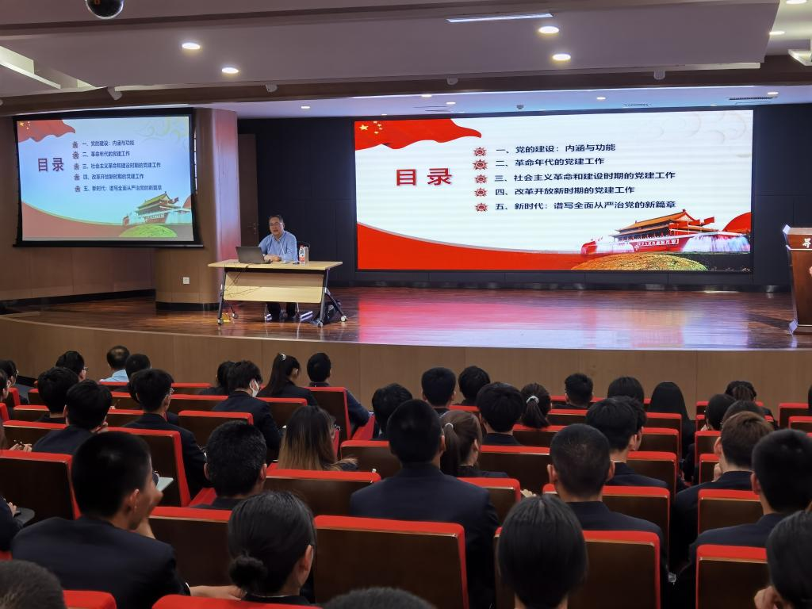
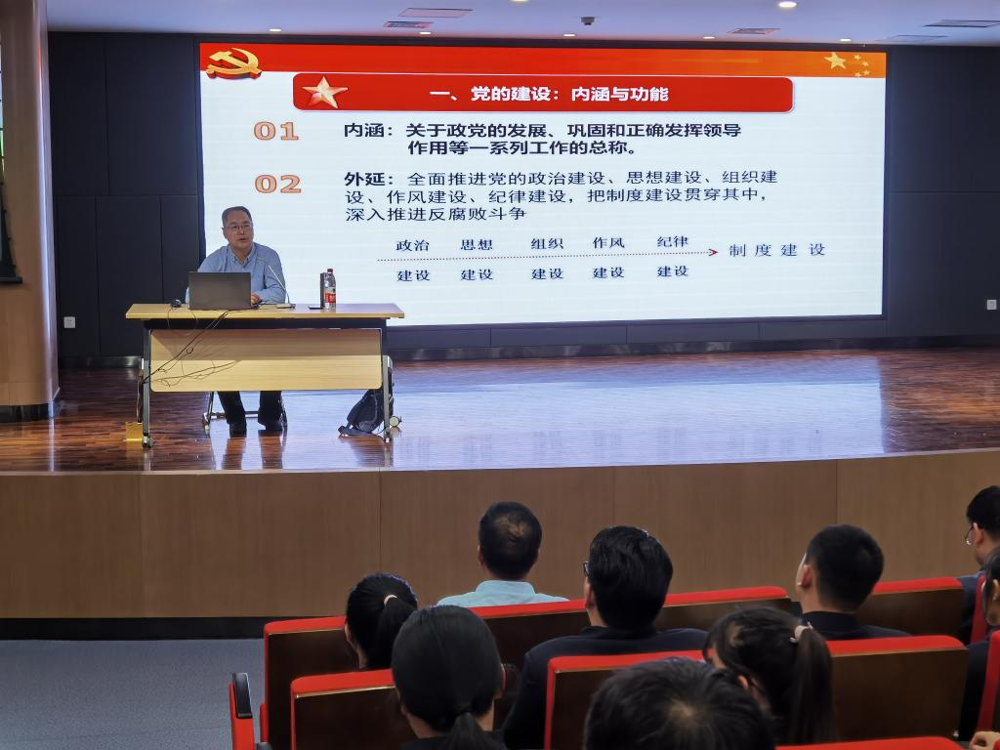

何云峰教授赴郑州升达经贸管理学院马克思主义学院做《中国共产党百年党建的历程》专题报告
发布时间：2021-05-14 11:24:37 作者：
为庆祝建党一百周年，5月11日晚7点，河南省中共党史学会理事、河南省新四军研究会副会长、河南大学哲学与公共管理学院教授、河南省党外知识分子理论研究基地副主任何云峰应邀至郑州升达经贸管理学院马克思主义学院做《中国共产党百年党建的历程》专题报告。马克思主义学院直属党支部书记窦峰、教学秘书晏玲玲、全体思政课教师以及部分学生代表参加。
何云峰教授以《中国共产党百年党建的历程》为题，围绕党的建设的内涵与地位、革命年代的党建工作、社会主义革命和建设时期的党建工作、改革开放新时期的党建工作、新时代谱写全面从严治党的新篇章五个方面，系统讲述了中国共产党辉煌的奋斗历程、取得的伟大成就和积累的宝贵经验。
郑州升达经贸管理学院马克思主义学院直属党支部书记窦峰对何云峰教授所作的精彩报告表示感谢。他指出，这是一堂生动的思政课，何教授从不同时间党建理论增强了老师和学生们对党的认识，我们要切实提高思想认识和政治站位，将党史学习教育中激发出的信念信心、热情激情转化为干事创业、攻坚克难的实际行动，真正做到“学党史、悟思想、办实事、开新局”。在庆祝党的百年华诞的重大时刻，在“两个一百年”奋斗目标历史交汇点，用优异成绩为党献礼！ （陈芳/图）